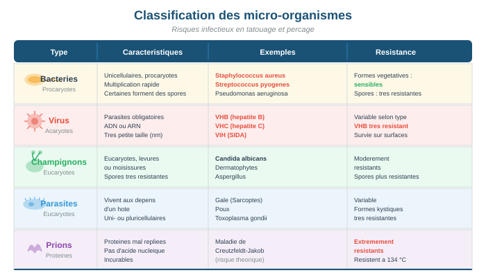

Micro-organismes
Objectifs d'apprentissage
- Identifier les principaux types de micro-organismes (bactéries, virus, champignons, parasites)
- Distinguer la flore résidente de la flore transitoire
- Connaître les flores spécifiques de chaque zone corporelle (cutanée, buccale, oculaire, génitale)
- Comprendre le mécanisme de formation des biofilms et leur impact
- Relier ces connaissances aux risques infectieux liés au tatouage et au perçage
1. Types de micro-organismes
Les micro-organismes sont des êtres vivants invisibles à l'oeil nu. Certains sont inoffensifs (commensaux), d'autres sont pathogènes et peuvent provoquer des infections graves lors d'un tatouage ou d'un perçage.
- Bactéries : organismes unicellulaires (ex. Staphylococcus aureus, streptocoques). Responsables de la majorité des infections post-tatouage et post-perçage. Se multiplient rapidement en conditions favorables.
- Virus : agents infectieux non cellulaires, parasites obligatoires (ex. VHB, VHC, VIH, HPV). Transmissibles par le sang, ils représentent le risque majeur lié aux aiguilles contaminées.
- Champignons : organismes eucaryotes (ex. Candida albicans, dermatophytes). Responsables de mycoses, fréquentes sur les muqueuses et les zones humides.
- Parasites : organismes vivant aux dépens de l'hôte (ex. Demodex). Risque moindre en tatouage/perçage mais possible en cas de mauvaise hygiène.
Les virus transmissibles par le sang (VHB, VHC, VIH) représentent le danger le plus grave. Le virus de l'hépatite B peut survivre jusqu'à 7 jours sur une surface sèche à température ambiante. La vaccination contre l'hépatite B est fortement recommandée pour les professionnels.

2. Flore résidente et flore transitoire
Notre corps héberge en permanence des milliards de micro-organismes. Comprendre la distinction entre les deux types de flore est essentiel pour adapter les protocoles d'hygiène.
- Flore résidente (commensale) : présente en permanence sur la peau et les muqueuses. Elle joue un rôle protecteur en empêchant la colonisation par des pathogènes. Difficile à éliminer totalement, elle se reconstitue rapidement après un lavage.
- Flore transitoire (contaminante) : acquise par contact avec l'environnement, les surfaces ou d'autres personnes. Potentiellement pathogène. Éliminée efficacement par le lavage des mains et la friction hydro-alcoolique.
Flores spécifiques par zone
- Flore cutanée : dominée par Staphylococcus epidermidis, Corynebacterium, Propionibacterium. Varie selon les zones (sèches, humides, sébacées).
- Flore buccale : l'une des plus riches du corps avec plus de 700 espèces identifiées. Comprend des streptocoques, Veillonella, Actinomyces, Fusobacterium et Candida.
- Flore oculaire : relativement pauvre grâce à l'action bactéricide des larmes (lysozyme). Principalement Staphylococcus et Corynebacterium.
- Flore génitale : chez la femme, dominée par les lactobacilles (flore de Döderlein) qui maintiennent un pH acide protecteur. Chez l'homme, flore mixte plus réduite.
- Flore vaginale : spécifiquement protectrice grâce aux Lactobacillus, toute perturbation (antiseptiques inadaptés, antibiotiques) peut favoriser des infections opportunistes comme Candida.
3. Biofilms : le danger invisible
Un biofilm est une communauté de micro-organismes qui adhèrent à une surface et s'entourent d'une matrice protectrice (exopolysaccharides). Cette structure les rend jusqu'à 1 000 fois plus résistants aux antiseptiques et antibiotiques.
Les bijoux de piercing constituent un support idéal pour la formation de biofilms, en particulier dans les zones humides (bouche, narine, organes génitaux). Un biofilm mature peut se former en 24 à 48 heures. C'est pourquoi :
- Les bijoux de première pose doivent être en matériau lisse et non poreux (titane ASTM F-136)
- Le nettoyage régulier du bijou et du site de perçage est indispensable
- Les matériaux poreux (acrylique, bois non traité) sont à proscrire en première pose
- Utiliser exclusivement des bijoux en matériaux biocompatibles à surface lisse
- Instruire le client sur le nettoyage quotidien avec une solution saline stérile
- Éviter de manipuler le bijou avec des mains non lavées
- Surveiller les signes d'infection (rougeur persistante, écoulement purulent, odeur)
Pour choisir le bon produit face à chaque type de micro-organisme — Annexe H — Produits désinfectants et antiseptiques : consultez le tableau des spectres d'activité (bactéricide, virucide, fongicide, sporicide)
Étude de cas
Travaux pratiques
Objectif : Comprendre l'échelle de résistance.
Consigne : Classez les micro-organismes suivants du moins résistant au plus résistant : VIH, Staphylococcus aureus, spores de Bacillus, Candida albicans, VHB, prion. Justifiez votre classement et indiquez le niveau de traitement nécessaire pour chacun (lavage simple, désinfection, stérilisation).
Durée estimée : 15 min
Objectif : Adapter les précautions au site de l'acte.
Consigne : Pour chaque zone (lobe d'oreille, langue, narine, avant-bras, pubis), identifiez la flore résidente dominante, le risque infectieux principal et les précautions spécifiques à prendre. Présentez vos résultats sous forme de tableau.
Durée estimée : 20 min
Glossaire du module
| Terme | Définition |
|---|---|
| Bactéricide | Agent ou produit capable de tuer les bactéries |
| Virucide | Agent ou produit capable d'inactiver les virus |
| Fongicide | Agent ou produit capable de tuer les champignons |
| Sporicide | Agent ou produit capable de détruire les spores bactériennes, forme de résistance la plus difficile à éliminer |
| Biofilm | Communauté de micro-organismes adhérant à une surface et protégée par une matrice extracellulaire, les rendant jusqu'à 1 000 fois plus résistants |